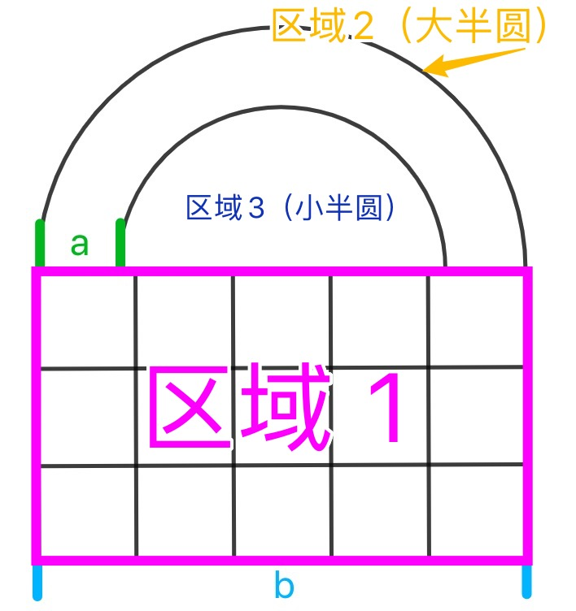
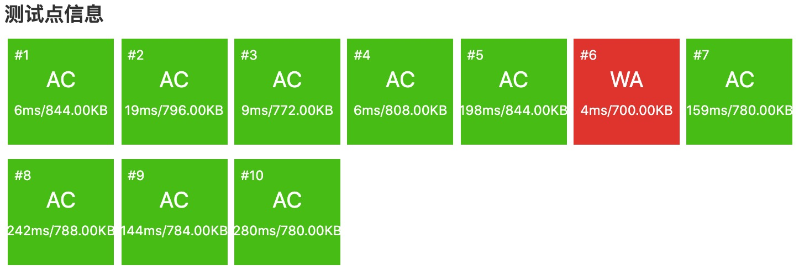
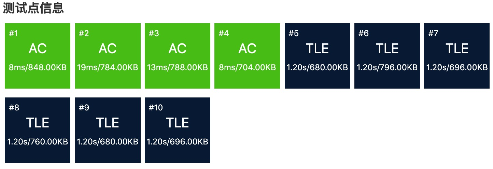
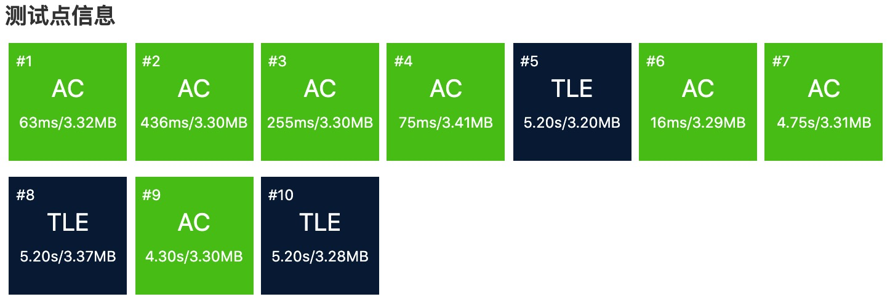

$\color{red}\text{前置知识——快速幂}$
这道题需要掌握的一个内容是快速幂。如果您对该算法比较生疏，可以先尝试解决P1226或/并借助该题的题解区快速入门。
快速幂的实质：
之所以加上那么多取余，是因为在运算过程中，如果取余次数不够，那么很有可能溢出。
我们可以写出递归版快速幂：
1 |
|
非递归版：
1 |
|
该算法在本题中要用到两次，分别在子问题$3,5$。
$\color{red}\text{子问题1}$
我们把密码锁进行分割：

不难发现，区域$1$由$15$个全等的正方形组成。显然，每个正方形的边长为$\dfrac{b}{5}$。所以$S_{区域1}=15·{(\dfrac{b}{5})}^2=\dfrac{3b^2}{5}$。
由$S_{\text{半圆}}=\dfrac{πr^2}{2}$得：
$S_{\text{区域2}}=0.25πb^2$，$S_{\text{区域3}}=0.25π(b-2a)^2$。
∴$S=S_1+S_2-S_3=0.6b^2+0.25π(4ab-4a^2)$。
我们在$\text{C++}$中引入$\text{cmath/math.h}$头文件之后（或者直接万能头文件），可以认为$π=\arccos(-1)$
$\color{red}\text{子问题2}$
首先算出$c=\lfloor \dfrac{S}{10} \rfloor=\lfloor 0.06b^2+0.025π(4ab-4a^2) \rfloor$。
方案$1$：每$10$个一捆绑，每捆绑的价格为$9c$。
则构成$\lceil \dfrac{2c}{10} \rceil=\lceil 0.2c \rceil$个捆绑。由于每一个的价格为$9c$，所以这种方案需要$9c \lceil 0.2c \rceil$个单位的价格。
方案$2$：按原价优惠$5\%$。原价为$2c·c=2c^2$。打折后的价格为$2c^2(1-5\%)=1.95c^2$。
因此$d=(\min(\text{round}(9c \lceil 0.2c \rceil), \text{round}(1.95c^2)))$。其中$\text{round(x)}$表示四舍五入进行取整。
取整函数有三种写法：
1 |
|
然而，本题数据足够弱。当使用上述的第三种四舍五入方式而不加特判时，输出结果是不会有影响的。
$\color{red}\text{子问题3}$
首先从密码锁 1 题解中搬运三个函数（具体用法这里简略说明，详见【密码锁 1】题解）：
1 | string itos(int x)//实现数字到拨盘字符串的转换，如158 -> "158", 39 -> "039" |
我们定义字符串类型的密码锁数组，然后先用快速幂计算整型值，再转换为字符串。然后在$0$和$999$之间进行枚举，根据函数不断替换最小值。
由于在【子问题$4$】中，售价要最大，所以$f$要尽可能大。因此可以从$999$开始，倒着跑一遍，找到最少步数$e$和对应的数值$f$。
$\color{red}\text{子问题4}$
由于成本为$d$，每一个的售价为$\lfloor \dfrac{f}{10} \rfloor$，因此要满足：
所以$g=\lfloor \dfrac{d}{\lfloor 0.1f \rfloor} \rfloor +1$。
【易错点】把$g$赋值为$\lceil \dfrac{d}{\lfloor 0.1f \rfloor} \rceil$。
当$d$能够被$\lfloor 0.1f \rfloor$整除时，有$g= \dfrac{d}{\lfloor 0.1f \rfloor}$。
这显然是不符合题意，只能拿到$98$分，在第$6$个测试点上会扣掉$2$分（$g$值错误导致$h$不正确，从而失掉该测试点$20\%$的分，即扣掉$2$分）：

$\color{red}\text{子问题5}$
根据题意，套用快速幂公式求解即可。
$\color{red}\text{总结}$
总之，本题的细节很多，而且答案一环扣着一环，一错就到底。
另外，本题如果$2$处都不用快速幂，而且其他地方都没有错误，那么能拿$40$分，结果如下：

不妨使用这份Python 代码来试试看，结果……
